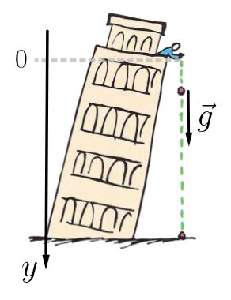
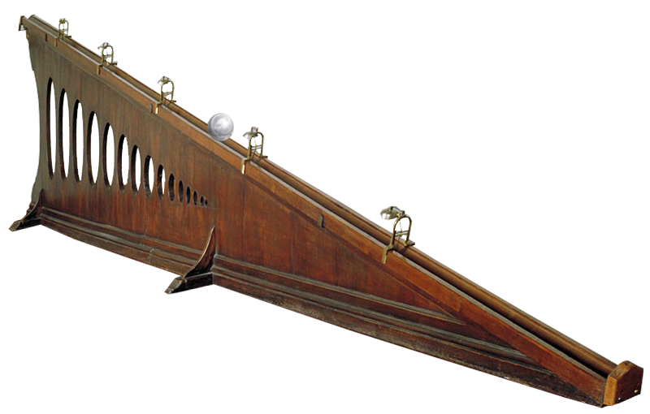
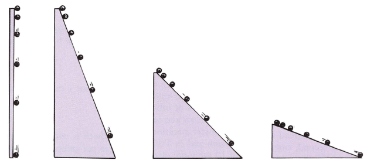
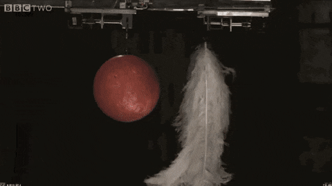
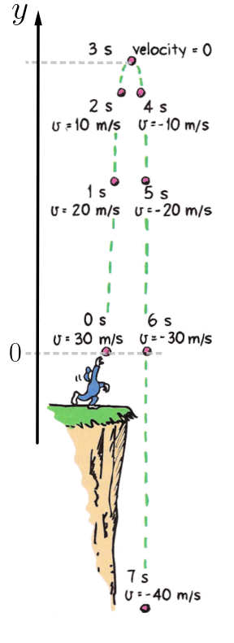
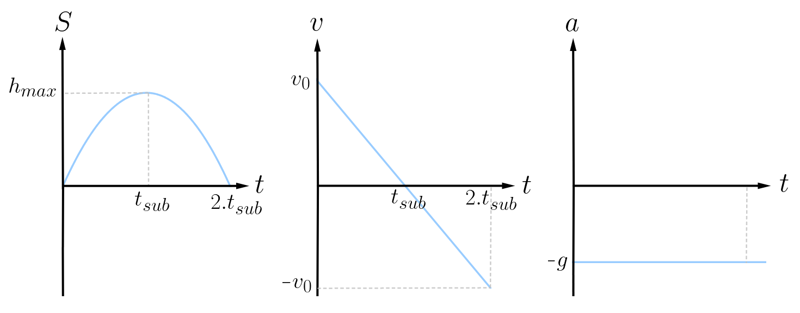
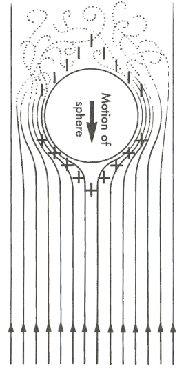

Aula1-8: Queda livre e lançamento vertical no vácuo
Queda livre

Chamamos de queda livre o movimento de um objeto que, quando abandonado de uma altura h, cai em direção ao solo atravessando um meio livre de forças de atrito (como o vácuo). Esse movimento é sempre retilíneo e uniformemente acelerado, pois o objeto fica sujeito apenas à aceleração da gravidade, que é constante, g ≅ 9,8 m/s2.
Para analisar esse tipo de movimento, geralmente é muito conveniente usar um sistema de referência análogo ao esboçado na figura ao lado.
Uma vez definido o referencial, basta aplicar as leis cinemáticas já estudadas para o movimento retilíneo uniformemente acelerado (MRUV).
Os planos inclinados de Galileu
Galileu viveu numa época em que os instrumentos de medição de tempo eram precários e bastante imprecisos; desse modo, analisar o movimento de objetos em queda na atmosfera era uma tarefa árdua.
Para contornar esse obstáculo, ele teve a ideia de fazer esferas deslizarem em planos inclinados e, assim, estudar o movimento com maior precisão.
O plano de Galileu dispunha de sinos móveis, para que a esfera, ao ultrapassá-los, fizesse-os tilintar.

Primeiro, Galileu dispôs os sinos igualmente espaçados uns dos outros. Assim, percebeu que o intervalo entre os sinais sonoros diminuía progressivamente. Em seguida, foi reorganizando o espaçamento entre os sinos até que eles soassem em intervalos regulares de tempo. Por último, mediu o espaçamento entre os sinos e percebeu que o espaço percorrido dependia do quadrado do tempo.
Galileu também pôde estender essa observação à queda dos corpos na atmosfera, pois suas medidas comprovavam que os resultados não dependiam do ângulo de inclinação do plano; logo, o mesmo aconteceria para o ângulo reto.

Outra coisa que Galileu percebeu, por meio deste e de outros métodos de análise, foi que a aceleração de um objeto não dependia de sua massa. De fato, dois objetos de massas diferentes, abandonados de uma mesma altura no mesmo instante, chegam juntos ao solo.

No experimento ao lado, uma bola de boliche e algumas penas são abandonadas ao mesmo tempo de uma mesma altura, dentro de uma câmara de vácuo. Todos os objetos atingem o solo conjuntamente.
Experimento da Torre de Pisa
De acordo com o aluno e biógrafo de Galileu Vincenzo Viviani (★ 1622 — 1703 ✝), Galileu teria feito com que esferas de massas diferentes fossem liberadas do alto da torre de Pisa, para com isso medir o tempo que levariam para chegar ao solo. Tal experimento corroborou a tese de que a aceleração gravitacional independia das massas dos corpos, como pressupunham os estudos galileanos. O episódio entrou para a história como O experimento da Torre de Pisa de Galileu.
Recentemente, opondo-se aos relatos de Vincenzo Viviani, o consagrado historiador da ciência Alexandre Koyré (★ 1892 — 1964 ✝) afirmou que tal empreendimento nunca foi realizado por Galileu, sendo ele, portanto, apenas uma lenda.
A pintura retrata Galileu, em presença do Grão-Duque, realizando a experiência da queda dos corpos na Torre Inclinada de Pisa.
Lançamento vertical no vácuo

Chamamos de lançamento vertical no vácuo o movimento do objeto que, estando no vácuo ou em ambiente sem forças de atrito, é impelido verticalmente para cima com uma velocidade inicial v0. O objeto viaja em movimento retardado (aceleração voltada para baixo) até atingir sua altura máxima; nesse ponto, ele para por um instante. Em seguida, o objeto cai, em um movimento análogo ao de queda livre.
Para analisar esse tipo de movimento, geralmente é muito conveniente usar um sistema de referência análogo ao esboçado na figura ao lado.
Uma vez definido o referencial, basta aplicar as leis cinemáticas já estudadas para o movimento retilíneo uniformemente acelerado (MRUV).
Uma rápida análise do problema permite extrair algumas relações importantes, que são verdadeiras para todos os casos de lançamento vertical no vácuo:
➔ O tempo de subida do móvel é igual ao tempo de descida (até o ponto de lançamento).
➔ Para uma determinada altitude, a velocidade tem o mesmo módulo na subida e na descida, mas os sentidos são opostos.
Gráficos característicos do lançamento vertical

Os gráficos acima representam a ascensão e a queda de um corpo: lançamento vertical no vácuo seguido de queda livre.
Queda com atrito
|
 |
Se considerarmos o atrito do ar na queda de um corpo, devemos incluir em nossa análise a força de arrasto, às vezes também chamada de força de viscosidade ou força de atrito aerodinâmico. A força de arrasto é uma força que resiste ao movimento de objetos sólidos que se deslocam através de um fluido. Essa força é dada pela seguinte expressão:
|
Na expressão acima, K é uma constante que depende do meio e do corpo estudado, v é a velocidade do corpo e n é um expoente que também depende do meio e do corpo estudado.
Observe que essa força depende da velocidade com que o corpo se desloca no meio; consequentemente, quando um corpo cai por um intervalo de tempo suficientemente grande, a força de arrasto cresce até se equilibrar com a força gravitacional, fazendo com que o corpo pare de acelerar e atinja o que chamamos de velocidade limite. A velocidade limite é, portanto, a velocidade (agora constante) do corpo a partir do momento em que a força de arrasto se iguala à força gravitacional.